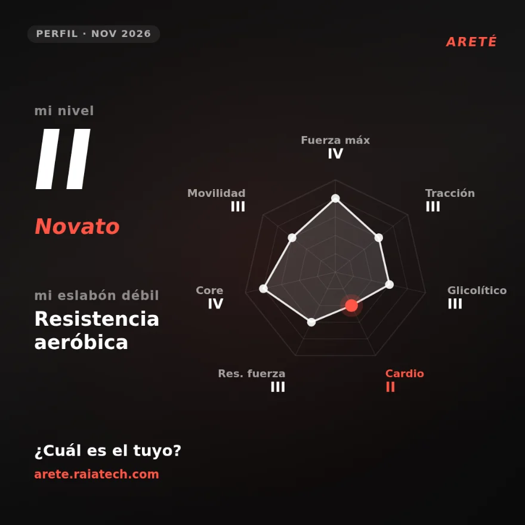

No es un blog de fitness: es la tesis de Areté, escrita en seis piezas. Por qué entrenar para todo, qué medimos y cómo se aplica.
7 dominios de rendimiento, medidos con tests concretos. Tu nivel es el más bajo, y cada uno sube con datos.

Excelencia sin días libres. Por qué existe Areté y qué defiende.
Un plan de ejemplo importable en 4 fases: fuerza, hipertrofia, definición y ajustes.
El formato importable de Areté. Diséñalo con IA o a mano, impórtalo y entrena.
Calorías, macros, timing y suplementos para cada fase, sin dietas absurdas.
Cómo entrenar la resistencia de fuerza con una sola pesa rusa, sin gimnasio.